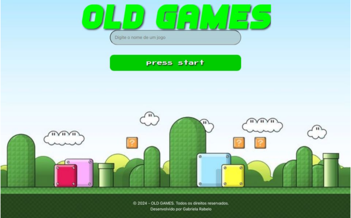

Sobre Mim
Sou uma estudante apaixonada por tecnologia, atualmente cursando Análise e Desenvolvimento de Sistemas na Universidade Uninter, com previsão de conclusão para 12/2024.
Tenho experiência em atendimento ao cliente e um estágio em radiologia hospitalar, onde desenvolvi habilidades de comunicação e trabalho em equipe.
Meus conhecimentos incluem administração empresarial, técnicas de radiologia, Python básico e uso do Pacote Office. Atualmente estou aprimorando minhas habilidades em JavaScript, HTML5 e CSS3.Estou buscando uma oportunidade para iniciar minha carreira na área de tecnologia, com interesse especial em desenvolvimento front-end.
Sou uma profissional dedicada, motivada pelo aprendizado contínuo e aberta a novos desafios que me permitam crescer profissionalmente e contribuir de forma significativa para o sucesso da equipe e da empresa.
Skills
HTML5
É a sigla para Hypertext Markup Language, ou Linguagem de Marcação de Hipertexto, e é uma linguagem de programação usada para criar páginas web.
CSS3
É uma linguagem de estilo que permite definir a aparência de uma página web. É um código que permite alterar a cor, o espaçamento, o layout, e até mesmo criar tabelas.
JavaScript
É uma linguagem de programação que permite a criação de páginas web interativas, com funcionalidades como animações, mapas interativos e atualizações de conteúdo.
Projetos
Old Games
Um site básico com informações de famosos jogos nos anos 90 e 2000. Criado com HTML, CSS e JavaScript
Ver Projeto 